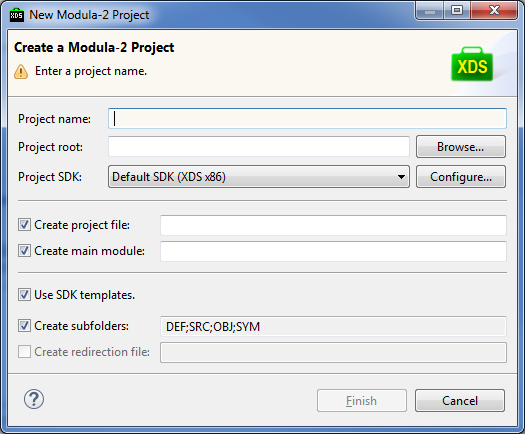
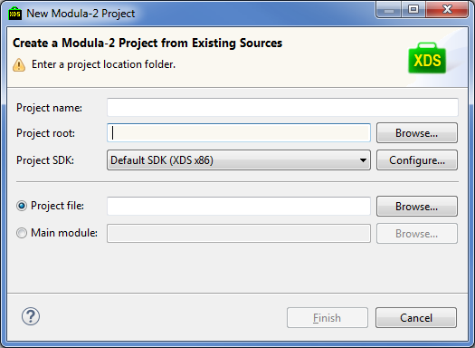
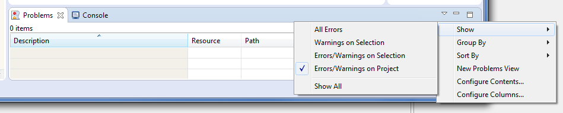
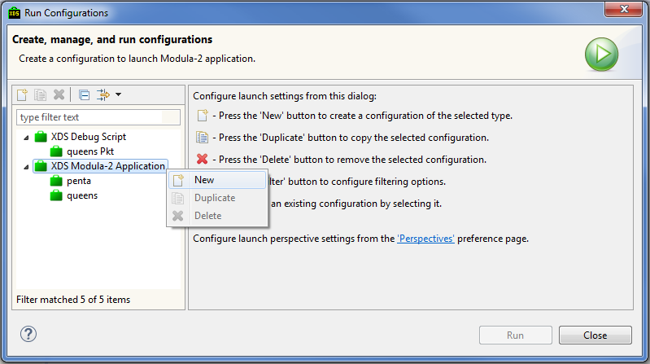
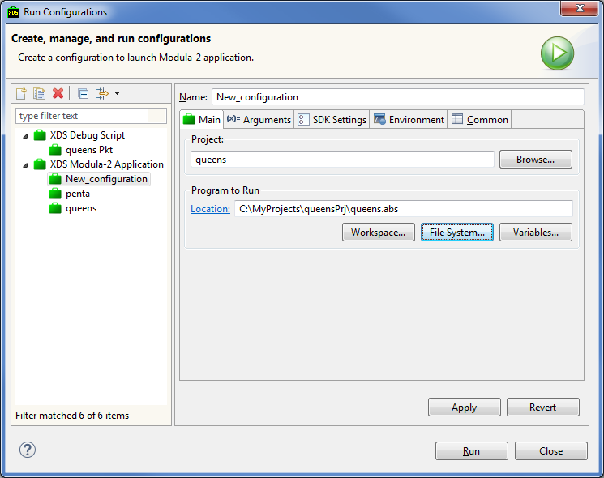
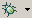

To create the new project select File > New > Modula-2 Project at the main menu. In the opened wizard specify new
project parameters.

Specify new project name (Project Name field).
Then specify project root directory location:(Project root).
Select the project SDK (Project SDK field): Unless otherwise indicated the default SDK is used. The Configure... button will open the SDK settings dialog.
One can create main module or project file, standard directory structure and redirection file. If Use SDK templates is checked then SDK templates will be used to create the files. Directory structure and redirection file name are also taken from the selected SDK settings.
Pressing the Finish button will create the new Modula-2 project and add it to the workspace. Newly created files and directories will show up in the Project Explorer.
To create project from existing sources select File > New > Modula-2 Project from Existing Sources in the main menu. Specify project settings in the wizard opened.

You can explicitly specify the new project name or it will be set automatically after the project root directory selection (Project root field).
Select the project SDK (Project SDK field): Unless otherwise indicated the default SDK is used. The Configure... button will open the SDK settings dialog.
Specify whether project file (Project File field) or main module (Main module) is used for the source build. One can select project file *.prj or main module file (*.mod or *.ob2) by pressing Browse... button.
Pressing the Finish button will create the new Modula-2 project and add it to the workspace. Newly created files and directories will show up in the Project Explorer.
To compile project select it in the Project Explorer view and the click Project > Build Project or Project > Rebuild Project in the main menu. First
compiles the project incrementally while the second rebuilds the project from scratch. These commands also can be invoked via the project element context menu at the Project Explorer view or by using hot key combinations Shift + F9 or Ctrl + Shift + F9 respectfully.
Compiler errors and warnings show up in the Problems view. By default markers are shown for all open projects in the IDE. To restrict markers to be shown for the single project select Show > Error/Warnings on Project item in the toolbar.

To run the Modula-2 program create the (Run Configuration). Run configuration specifies the project, executable file path and optional launch parameters for the program.
To create run configuration select Run > Run Configurations... in the main menu and specify run configuration parameters.
In the opened dialog select XDS Modula-2 Application in the left pane, open context menu with the right mouse
click and select New.

New run configuration will be created and right pane will show run configuration editor.

Type run configuration name in the Name field.
Select target workspace project for this run configuration and executable file for the launch. Apply button saves changes for the edited run configuration, Revert button reverts run configuration parameters to the last saved state.
Other tabs allow to set additional optional run configuration parameters.
After filling up mandatory fields press the Run button to launch the program.
Once created launch configuration can be used again. To do this select it from the Main menu dropdown: Run > Run History.
The majority of launch actions for the progam is available via the Run toolbar button:
This button shows the list of last invoked last configurations and their corresponding edit actions. Progam standard output and standard error will show up in the Console view.
To launch Modula-2 program in debug mode create (Debug Configuration) or use already existent Run Configuration.
To create the Debug Configuration select Run > Debug Configurations... in the main menu. In the opened dialog select XDS Modula-2 Application in the left pane, open context menu with the right mouse
click and select New.
Type run configuration name in the Name field.
Other fields can be filled the same way as for the Run Configuration.
After filling up mandatory fields press the Debug button to launch the program in the Debug mode.
Once created Debug configuration can be used again. To do this select it from the Main menu dropdown: Debug > Debug History.
The majority of launch actions for the progam is available via the Debug toolbar button:

This button shows the list of last invoked last configurations and their corresponding edit actions.